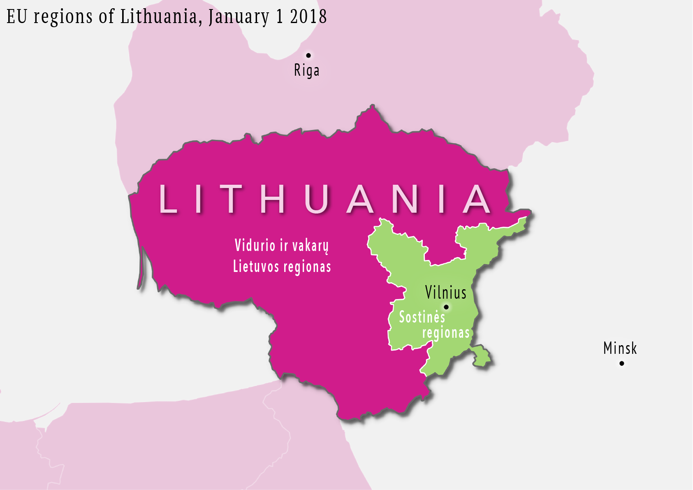
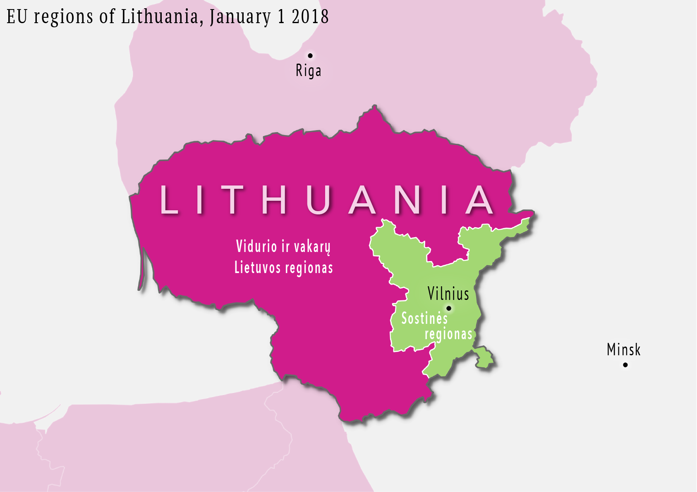
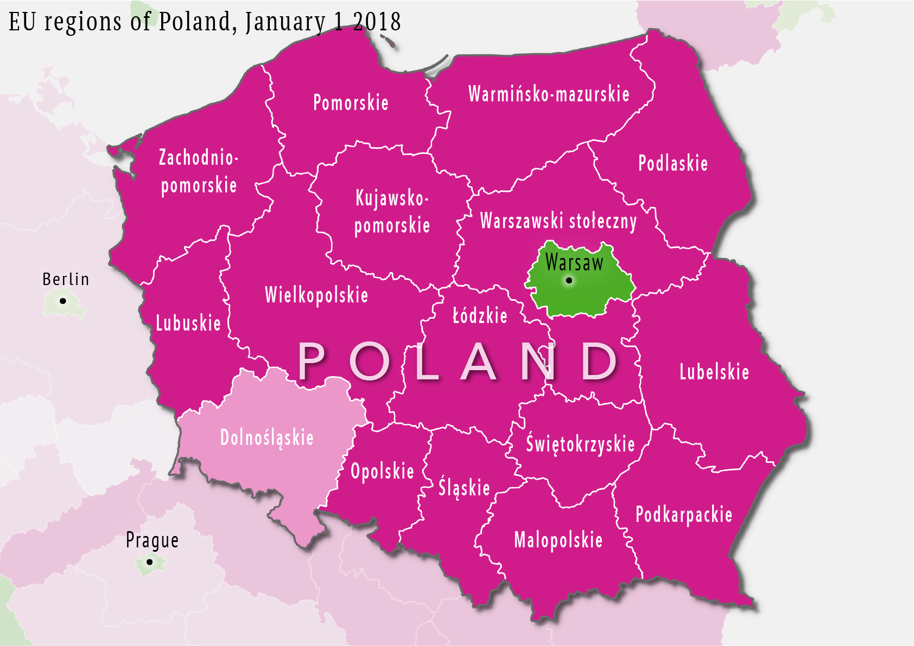
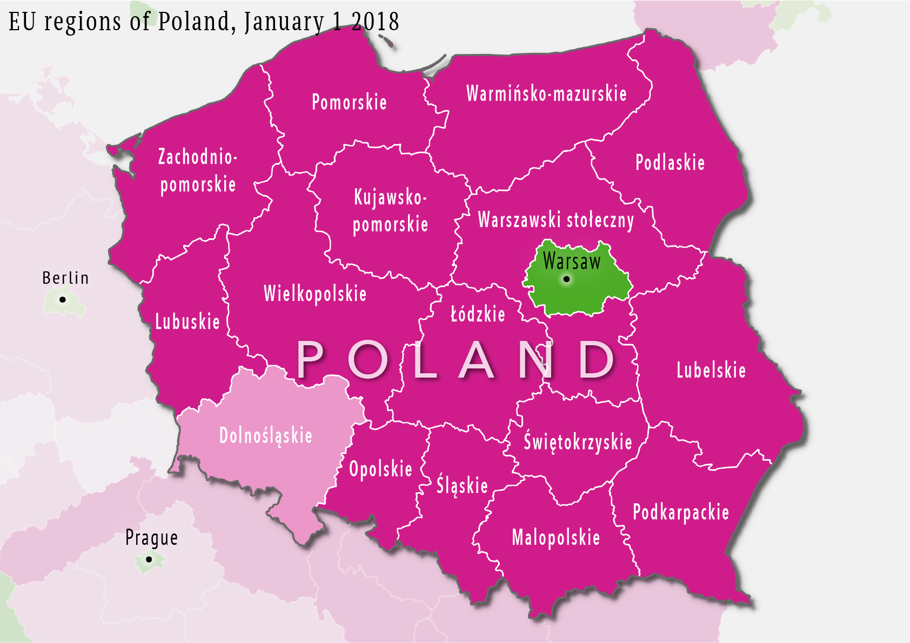

People familiar with the geography and economics of Europe know where the rich, developed countries are, situated mostly in Western and Northern Europe. On the map, richer countries are shaded in green, less developed countries are in shades of pink, denoting economic development via each region’s gross domestic product of countries and regions.
One of the policies of the EU has been to create more "cohesion", jargon for poorer and less developed regions catching up economically with the developed ones. An easy solution would have been to funnel EU money from developed countries to less developed ones. But the policy makers knew that rich countries also have poor regions and poor countries also have richer regions. Let’s see how development changes when we examine the 276 regions of the EU instead of 28 countries.
Notice the geographical divisions in Italy (developed north, less developed south), Belgium (the same) and Germany (developed west, less developed east), and the islands of development that are the regions containing the capitals (denoted by a black circle = • ) (Spain, France, UK, Poland, Romania, Slovakia)
This breakdown into 276 regions is what the EU uses to distribute its “catch-up funds,” money used the construction of transport infrastructure, , schools, and hospitals, as well as research and development projects, for example. The least developed regions get a bigger share of the 50 billion euros distributed annually and have to cofund less of total project costs. More developed regions receive less money and pay more of the project costs. So how does the EU decide whether a region is poor or rich? Where are the lines drawn?
To better understand this, we turn the map into a chart. On the chart every
- represent regions
- represent average country GDP
- are regions containing the country capital
The regions are ordered from left to right by their GDP.
The EU average is set to 100. A region with an economic development score of 90 has a GDP of 90 % of the EU average.
The region of Inner London - West is a big outlier: its GDP is more than 600% the EU average (and consequently receives little EU catch-up funds). Let’s zoom in so we can see more details for the other regions.
The range of regional economic development is quite high for many countries. In almost all countries, regions containing the country’s capital ⦿ are much more developed than the other regions.
The 5 colors used on this chart (as well as the preceding maps) all correspond to EU funding thresholds. Regions with a GDP lower than 75% of the EU average are considered "less developed" and receive the most money from the catch-up funds. The EU pays 85% of all development project costs. Regions with a GDP between 75% and 90% have 60% of project costs paid for by the EU. Other regions (between 90% and 100%, between 100% and 110%, between 110 and 125% or above 125% of the average) pay half of the project costs themselves.
Suppose you are the governor of one of the three regions annotated on the chart (Warsaw, Budapest, and Lithuania), which are all on the brink of a funding threshold and able to receive additional EU funds as a lesser developed region. Suppose one part of your region hosts the country capital and is relatively rich, while the other part of your region is quite poor and its GDP is actually well below the EU funding threshold. The wealthy part of your region is lifting up the GDP to an extent that the that the region as a whole, could be excluded from the full benefits of EU catch-up funds.

 

 
